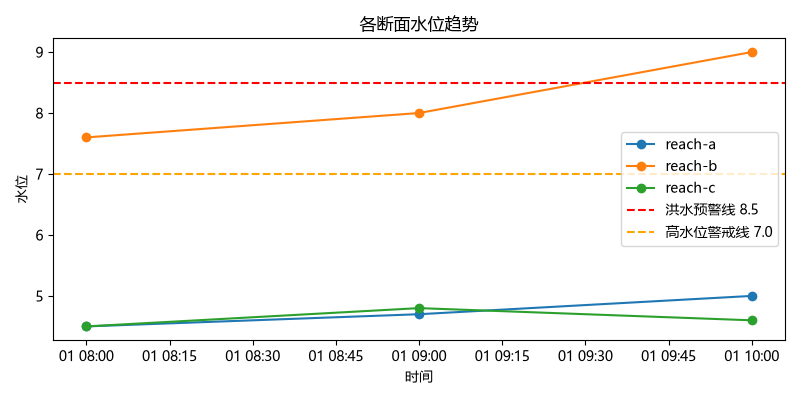
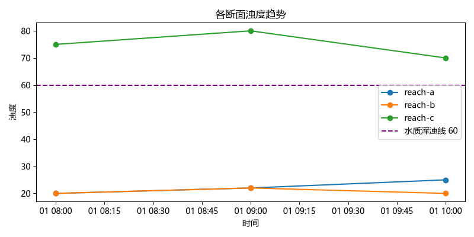

数据来源：data/tidewatch_history.csv（模拟运行数据）
生成时间：2026-10-03 21:28:24
| reachId | count | waterLevel_mean | waterLevel_max | turbidity_mean | turbidity_max | abnormal_count |
|---|---|---|---|---|---|---|
| reach-a | 3 | 4.733333 | 5.0 | 22.333333 | 25 | 0 |
| reach-b | 3 | 8.200000 | 9.0 | 20.666667 | 22 | 3 |
| reach-c | 3 | 4.633333 | 4.8 | 75.000000 | 80 | 3 |

